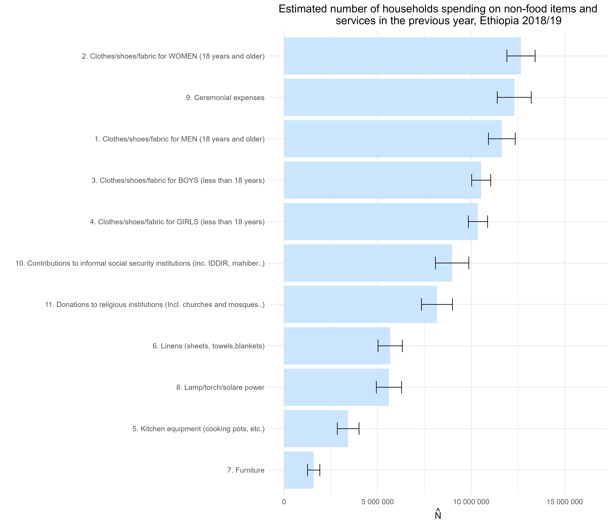
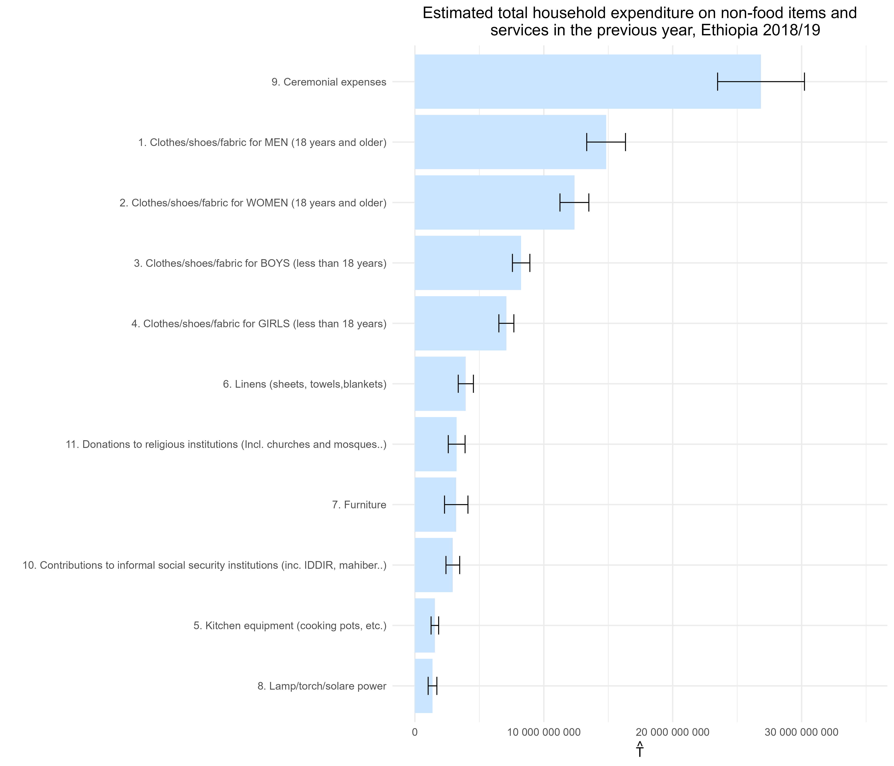

7.1 Bar charts
This section presents a series of bar charts based on household-level data from Section 7 of the Ethiopia Socioeconomic Survey (ESS4), focusing on non-food expenditure. Using the complex survey design, three key indicators are estimated for each type of non-food item or service reported over the past 12 months:
- \(\hat{N}\): Estimated number of households who spent on the item.
- \(\hat{P}\): Estimated proportion of households with such expenditure.
- \(\hat{T}\): Estimated total household expenditure nationwide.
Each chart includes 95% confidence intervals, allowing clear identification of the most prevalent and financially significant spending categories across Ethiopian households.
Prepare the work environment
This initial block sets up the environment to produce bar charts on non-food expenditure using data from Section 7 of the ESS4 questionnaire. It clears the memory, loads required libraries, and imports the dataset. Then, it recodes non-reported expenses as zero and creates a binary indicator of whether the household spent on each item. Lastly, it defines the complex survey design, incorporating stratification, primary sampling units, and expansion weights—ensuring accurate and representative estimates.
#------------------------------------------------------------------------------#
# Cleaning R Environment #
#------------------------------------------------------------------------------#
rm(list = ls())
gc()## used (Mb) gc trigger (Mb) max used (Mb)
## Ncells 534173 28.6 1196018 63.9 660380 35.3
## Vcells 945826 7.3 8388608 64.0 1769850 13.6#------------------------------------------------------------------------------#
# Libraries #
#------------------------------------------------------------------------------#
library(dplyr)
library(survey)
library(srvyr)
library(data.table)
library(magrittr)
library(haven)
library(stringr)
library(tidyr)
library(ggplot2)
library(scales)
library(forcats)
#------------------------------------------------------------------------------#
# Loading Datasets #
#------------------------------------------------------------------------------#
options(survey.lonely.psu = "fail")
HH_data <- read_sav("data/data_ESS4/sect7b_hh_w4_v2.sav")
#------------------------------------------------------------------------------#
# 7.1 Bar Charts #
#------------------------------------------------------------------------------#
# Prepare dataset:
# - Group by item category
# - Convert missing or non-reported expenditures to zero
# - Create an indicator variable (yes/no) for whether a household spent on an item
HH_data <- HH_data %>%
group_by(item = item_cd_12months) %>%
mutate(expenditure = ifelse(s7q03 == 2, 0, s7q04), # If no expense, set to 0
yes_no = ifelse(s7q03 == 2, 0, 1)) # Indicator for spending (1) or not (0)
# Defining survey design
ESS4_design <- HH_data %>%
mutate(strata = paste0(saq01, "_", saq14)) %>%
as_survey_design(
ids = ea_id,
strata = strata,
weights = pw_w4,
nest = TRUE
)
options(survey.lonely.psu = "fail")
summary(ESS4_design)## Stratified 1 - level Cluster Sampling design (with replacement)
## With (535) clusters.
## Called via srvyr
## Probabilities:
## Min. 1st Qu. Median Mean 3rd Qu. Max.
## 3.932e-05 1.997e-04 7.680e-04 2.814e-03 4.164e-03 1.317e-01
## Stratum Sizes:
## 1_1 1_2 12_1 12_2 13_1 13_2 14_2 15_1 15_2 2_1 2_2 3_1 3_2
## obs 4323 3113 2145 3300 2090 3960 8558 1760 4609 3289 2475 5269 2981
## design.PSU 35 19 19 20 18 24 52 14 28 28 15 43 18
## actual.PSU 35 19 19 20 18 24 52 14 28 28 15 43 18
## 4_1 4_2 5_1 5_2 6_1 6_2 7_1 7_2
## obs 4983 3300 3905 2805 1859 2145 4642 2959
## design.PSU 43 20 35 17 16 13 40 18
## actual.PSU 43 20 35 17 16 13 40 18
## Data variables:
## [1] "household_id" "item_cd_12months" "ea_id" "saq14"
## [5] "pw_w4" "saq01" "saq02" "saq03"
## [9] "saq04" "saq05" "saq06" "saq07"
## [13] "saq08" "s7q03" "s7q04" "item"
## [17] "expenditure" "yes_no" "strata"This block computes the weighted estimates for Table 7.3, which summarizes household spending on nonfood items and services. For each item reported over the past 12 months, three key indicators are estimated using the complex survey design:
N_hat: Estimated total number of households spending on the item.
P_hat: Proportion of households that spent on the item.
T_hat: Total estimated amount spent on the item across all households.
These indicators help identify the most common nonfood spending categories and their relative importance in household budgets.
#------------------------------------------------------------------------------#
# TABLE 7.3 - Spending on Nonfood Items and Services
#------------------------------------------------------------------------------#
# Compute weighted estimates:
# - `N_hat`: Total number of households spending on an item
# - `P_hat`: Proportion of households spending on an item
# - `T_hat`: Total amount spent on each item
tab_03 <- ESS4_design %>%
group_by(item) %>%
summarise(
N_hat = survey_total(yes_no, na.rm = TRUE, vartype = c("se", "ci")),
P_hat = survey_mean(yes_no, na.rm = TRUE, vartype = c("se", "ci")),
T_hat = survey_total(expenditure, na.rm = TRUE, vartype = c("se", "ci"))
) %>%
mutate(item = as_factor(item))Bar Chart for Estimated Number of Households Spending on Non-Food Items
This block produces a horizontal bar chart displaying the estimated number of households (\(\hat{N}\)) that spent on various non-food goods and services during the 12 months preceding the survey. The results are based on the ESS4 complex survey design (Ethiopia, 2018/19) and include 95% confidence intervals shown as error bars. Items are sorted from the lowest to highest number of households, allowing for easy comparison across categories.
#------------------------------------------------------------------------------#
# Bar Chart for Estimated Number of Households Spending on Non-Food Items
#------------------------------------------------------------------------------#
tab_03 <- tab_03 %>%
mutate(item = fct_reorder(item, N_hat, .desc = FALSE))
ggplot(data = tab_03, aes(
x = item,
y = N_hat,
ymax = N_hat_upp,
ymin = N_hat_low
)) +
geom_bar(stat = "identity",
position = "dodge",
fill = "#CCE5FF") +
geom_errorbar(position = position_dodge(width = 0.9), width = 0.3) +
scale_y_continuous(labels = label_number(accuracy = 1),
limits = c(0, max(tab_03$N_hat)*1.3) ) +
labs(
y = expression(hat(N)),
x = "",
title = "Estimated number of households spending on non-food items and
services in the previous year, Ethiopia 2018/19"
) +
theme_minimal(13) +
theme(plot.title = element_text(hjust = 0.5)) + # Centers the title
coord_flip()
Bar Chart for Estimated Total Household Expenditure on Non-Food Items
This block creates a horizontal bar chart showing the estimated total household expenditure (\(\hat{T}\)) on various non-food goods and services over the past 12 months, based on ESS4 survey data (Ethiopia, 2018/19). The estimates include 95% confidence intervals, visualized as error bars. Items are sorted in ascending order of total expenditure, enabling identification of the categories with the highest monetary burden at the national level.
#------------------------------------------------------------------------------#
# Bar Chart for Estimated Total Household Expenditure on Non-Food Items
#------------------------------------------------------------------------------#
tab_03 <- tab_03 %>%
mutate(item = fct_reorder(item, T_hat, .desc = FALSE))
ggplot(data = tab_03, aes(
x = item,
y = T_hat,
ymax = T_hat_upp,
ymin = T_hat_low
)) +
geom_bar(stat = "identity",
position = "dodge",
fill = "#CCE5FF") +
geom_errorbar(position = position_dodge(width = 0.9), width = 0.3) + # Error bars for confidence intervals
scale_y_continuous(labels = label_number(accuracy = 1),
limits = c(0, max(tab_03$T_hat)*1.3)) + # Format y-axis labels
labs(
y = expression(hat(T)), # LaTeX-style notation for total expenditure
x = "",
title = "Estimated total household expenditure on non-food items and
services in the previous year, Ethiopia 2018/19"
) +
theme_minimal(13) +
theme(plot.title = element_text(hjust = 0.5)) + # Centers the title
coord_flip()
Bar Chart for Estimated Proportion of Households Spending on Non-Food Items
This block creates a horizontal bar chart displaying the estimated proportion of households (\(\hat{P}\)) that spent on various non-food goods and services during the past 12 months (ESS4, Ethiopia 2018/19). Each bar shows the fraction of households reporting expenditures, along with a 95% confidence interval. Items are ordered from the lowest to highest spending prevalence, allowing visualization of patterns in household access or needs by item category.
#------------------------------------------------------------------------------#
# Bar Chart for Estimated Proportion of Households Spending on Non-Food Items
#------------------------------------------------------------------------------#
tab_03 <- tab_03 %>%
mutate(item = fct_reorder(item, P_hat, .desc = FALSE))
ggplot(data = tab_03, aes(
x = item,
y = P_hat,
ymax = P_hat_upp,
ymin = P_hat_low
)) +
geom_bar(stat = "identity",
position = "dodge",
fill = "#CCE5FF") +
geom_errorbar(position = position_dodge(width = 0.9), width = 0.3) +
scale_y_continuous(labels = label_number(accuracy = 0.05),
limits = c(0, max(tab_03$P_hat)*1.3)) +
labs(
y = expression(hat(P)),
x = "",
title = "Estimated proportion of households that spent on non-food items
and services in the previous year, Ethiopia 2018/19"
) +
theme_minimal(13) +
theme(plot.title = element_text(hjust = 0.5)) + # Centers the title
coord_flip()